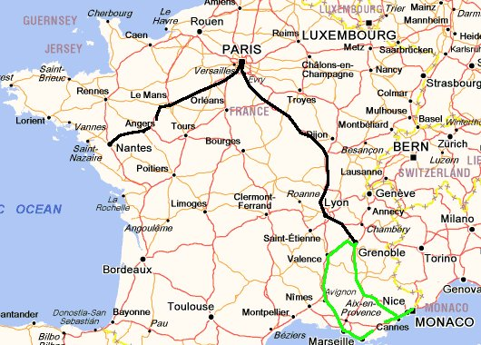
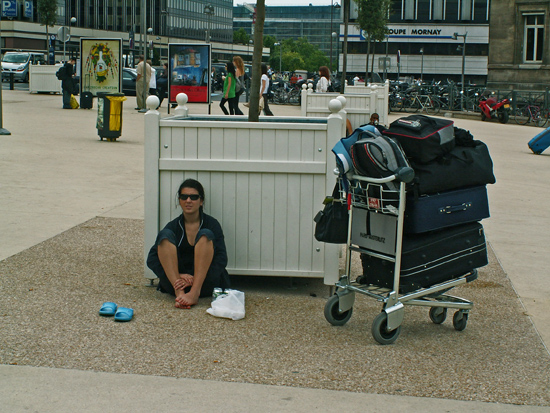

За това пътуване
Самолет: 3512 km
Автомобил: 1157 km
Влак: 1912 km
Общa Статистика
Самолет: 29415 km
Автомобил: 26819 km
Влак: 3972 km
Кораб: 928 km
Общо: 61134 km
Градове: 52
Държави: 20
Континенти: 2
Обиколка на Франция
Хриси спечели стипендия за магистратура в престижното училище по комуникации в Анже – Франция. Въпреки че щяхме да сме разделени девет месеца, решихме, че това не е възможност за изпускане и един септемврийски ден пълен с носталгия, я изпратих на летището с еднопосочен билет.
Тя учеше, аз работех и времето летеше неусетно. Точно по това време бяха славните години за Investor – пускахме сайт след сайт, потребителите се рояха а продажбите растяха с минимум 80% на година.

Париж - Анже - Нант -
Гренобъл - Ница - Монако
Средата на лятото дойде, с полет София - Париж и после скромните 300 километра TGV, се озовах на празничното завършване на випуск 2007 на Ircom. Отпразнувахме подобаващо, французите знаят как – общо купона беше около три дни. Междувременно успяхме да разгледаме Анже и Нант – спокойни и уредени градове.
В Анже се разходихме около средновековната крепост и катедралата... то май това е интересното там, другото е спокойствие мек климат и розе.

Виж Галерията от Анже
Нант като център на Пеи дьо ла Лоар е по голям но и там освен замъкът на Дуковете на Бретания и няколко катедрали няма друго интересно, освен може би добре поддържаните паркове пълни с рибки, костенурки, патици и други птици.
Виж Галерията от Нант
Добре че не носих много багаж, защото багажът на Хриси, беше както и да го погледнеш „свръх багаж“. На снимката си личи.

Хриси на Gare de Lyoun
За около ден с прекачванията стигнахме отново с TGV до Гренобъл, където „брачеда“ ни чакаше на гарата. Всъщност не сме братовчеди, а кумове, това ни е останало още от шегите по купоните в „Техническия“.
Казват че Гренобъл е разположен в нещо като леген – отвсякъде планини и по-средата река, която понякога пълнела легена. Гледката от Бастилията е невероятна, не е за изпускане. Има и готини барове, ходихме в един със странни бири от типа на черешова и други, естествено брачеда ни заведе.
Виж Галерията от Гренобъл
Не стига че ни приютиха, ами хапвахме и специални френски ястия, че даже и ни дадоха колата да отидем на море! За всичко сме им много благодарни. Пътят към Лазурния бряг има два варианта единият – магистрала, естествено платена, другият завой през Алпите. Изпрахме отиване по магистралата и връщане през планината. Така за около пет часа бяхме в Марсилия. Марсилия е другата Франция – мръсно и оживено. Случайни минувачи ни предупредиха да не си носим фотоапарата на врата, щели да ни го откраднат. Разходихме се до морската гара и това ни стигаше.
Виж Галерията от Марсилия
Следобед пристигнахме във Вилньов Лубе. Хотелът ни имаше панорамен басейн на покрива, който беше добра алтернатива на каменистия плаж. Редувахме ги, като на плажа се разхлаждахме с бира а на басейна с Pastis. Ходихме до Кан. Нищо интересно. После Ница, там панорамната тераса над плажа предлага красива гледка. Открихме Ез. Старинно мини градче между Ница и Монте Карло. Струва си. Стигнахме и до Монте Карло, където покарах голфа на брачеда по трасето за Формулата и това беше.
Виж Галерията от Лазурния Бряг
На връщане, въпреки многото завой през Алпите не сгрешихме. Пътят е живописен, на места издълбан в скалите. Спирахме в малки планински градчета, видяхме кристално сините алпийски потоци и голите скалисти върхове на Средиземноморските Алпи.
Виж Галерията от Алпите
Отново в Гренобъл си направихме сполучлива разходка за един ден до Женева и Анси. В Женева направихме разходка по женевското езеро с корабче около известния фонтан Jet d'Eau.
Виж Галерията от Женева
Анси се оказа много интересно градче. Наричат го Венеция на Франция. Симпатичните френски къщи са опасани от пълноводни канали, в които водата се движи доста бързо, явно са каптирани планински потоци. Разликата с Венеция е, че логично не са плавателни, но пък са свързани с огромно езеро, където може да се наеме малка лодка за разходка.
Виж Галерията от Анси
За накрая си оставихме два дни в Париж. Кулата, Лувара и другите известни забележителности си бяха на местата. Важното е, че се видяхме се с Тошето aka Тигре и Надеж - да вече и той беше женен.
Виж Галерията от Париж
Връщайки се към дома и двамата с Хриси не подозирахме, че всъщност вече сме трима и животът ни ще се промени доста след това чудесно пътуване!